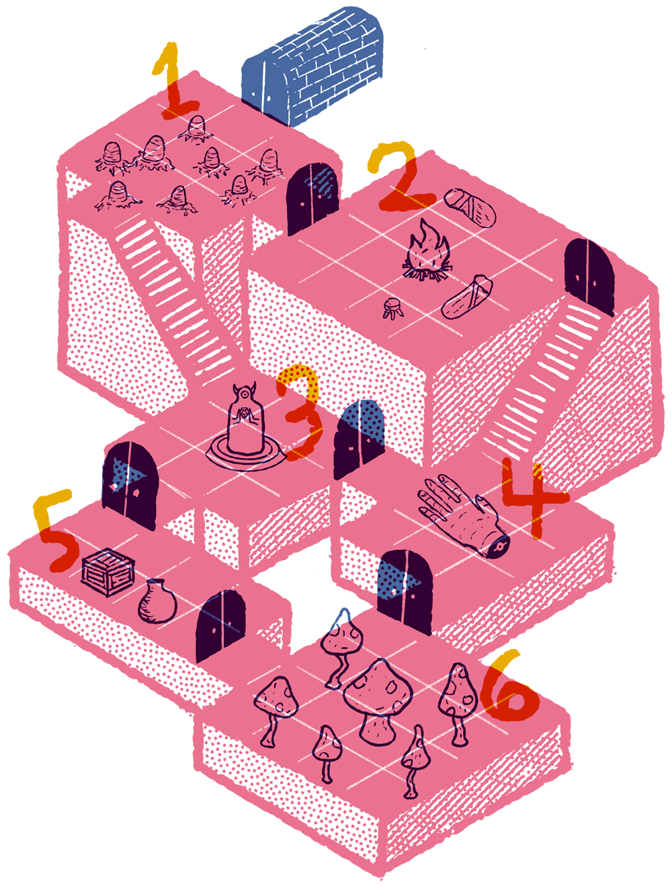
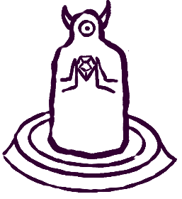
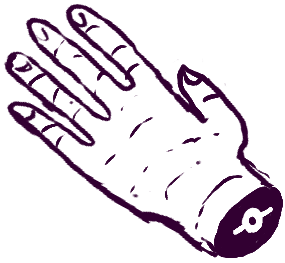
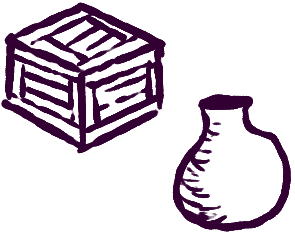
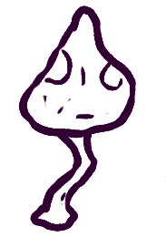

THE CELLARS OF SVELNAK
INTRODUCTION
Thick vegetation grows over the remains of a long toppled structure. Ages ago it was the estate of a well-to-do merchant of a long forgotten civilization. Now it is just weathered columns and bricks, nearly reclaimed entirely by nature. Hidden in these ruins is an ancient tunnel of crumbling bricks. At the end of the dark tunnel is a stone door to the estate's former storage cellars.
1. Spider Eggs
Silky egg sacs sit in web mounds around the room. If an egg sac is touched, there is a 50% chance that 1d6 hungry spider babies will emerge. Crossing the room without touching them is difficult.
An old skeleton is buried under webs, grasping a serrated silver short sword with an evil eye symbol on the crossguard. Loud noises have a 4-in-6 chance of attracting Svelnak Doomsilk from room 3.
2. Camped Treasure Hunters
Smoke obscures the ceiling. Three knaves are camped here, playing a card game. One is feverish from spider bites and will turn into a spiderling in 2d12 minutes if not healed.
They came here following an old map looking for a fabled Star Jewel but are hiding from the spiders and mushrooms.
They have two days of rations, a golden snail idol, and a luxurious pack of playing cards printed in gold and red ink.
3. Webbed Idol
A web-covered statue of a horned figure holds a dimly glowing blue gemstone firmly in its stone hands. The gemstone has a seven-point star-shaped protrusion on its top. Touching it with bare skin for more than five minutes causes 1d4 burn damage.
Bits of crushed mushrooms litter the floor and hang in webs. Svelnak Doomsilk, an ancient spider lurks in the shadowy corners of the ceiling with two young spiders. It covets the gemstone but does not know how to release it from the statue’s hands. It made its lair here years ago so it could be near the gemstone. It has killed any who tried to remove it.
Removing the web and examining the statue reveals metal hinges on the wrists and that the horns are made of metal and can be turned in their sockets. If the horns are pointed downward the wrist hinges will release the gemstone.
4. Iron God Hand
2d6 mushroom men dance in a circle around a giant mechanical hand. A dead young spider is laid atop the hand, burning. The dancing continues until the fire dies down. Burn marks on the hand indicate this ritual has happened multiple times.
In the wrist of the hand is a seven-pointed star-shaped indention. If the gemstone from room 3 is inserted, the hand gets up, walking on its fingers. It will make its way towards its giant mechanical body, which is buried deep in a faraway ocean. It will try to crush anything that gets in its way.
If the ancient mechanical body is reassembled it will awaken and wreak havoc on the planet. Fortunately, there are more pieces still lost about the world, unactivated.
5. Hidden Loot
2d4 Mushroom men chase a young spider around rotten crates and dusty urns.
Inside the containers:
- Two rusty swords with golden hilts
- Clay helmet with decorative bat wings
- Scroll of Wall Walking
- 1d100 gold coins
- Red Stone Spear
- 3 Bottles of rose vodka
- Pickled angel tongue: If someone eats it they'll suddenly become fluent in the next foreign language they hear.
6. Fungal Warren
Mushrooms fill the room, growing on the floor and walls. They have a slightly humanoid shape. They eventually grow into sentient mushroom men at the rate of one per week.
In the center of the room, obscured by fungus is a decomposed body of a botany priest who died in the middle of a gardening ritual. His face bears an uncanny resemblance to that of all the mushroom men In their hand is a greenwood staff with a rose carve in the top. If stuck in soil is causes plants and fungus to grow at ten times their normal rate. Fungus has fused it to the dead priest’s hands.
The small mushroom forest the fills this room is densest around the staff and body. Taking the staff from the body ends the accidental spell and the growth of the mushrooms for good. Any remaining mushroom men will be the last of their kind.
Bestiary
- Spider Baby - 1HD, about the size of a cat.
- Young Spider- 2HD, about the size of a large dog.
- Spiderling- 2HD, a humanoid spider enthralled to Svelnak.
- Svelnak Doomsilk- 5HD, about the size of a cow. Svelnak is ancient and cunning. She is obsessed with the gemstone in room 4. Its magic has warped her mind and she is compelled to keep it within her sight at all times unless fighting off would be jewel thieves. Her bite has a 25% chance of turning people into spiderlings.
- Knaves - 2HD
- Mushroom Men 1HD
- Iron God Hand - 6HD